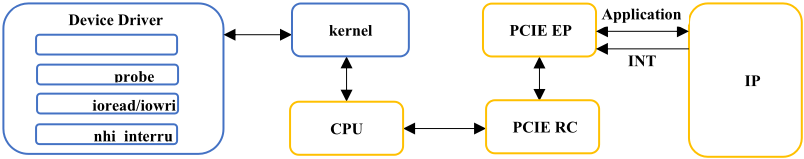
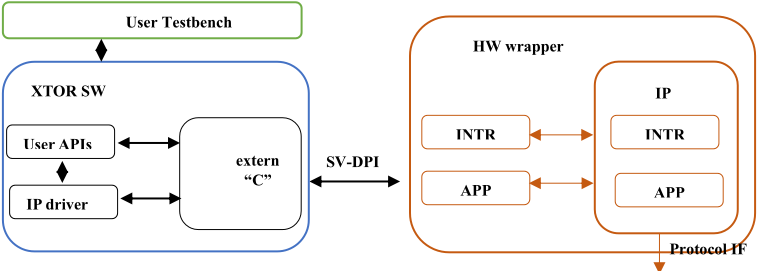
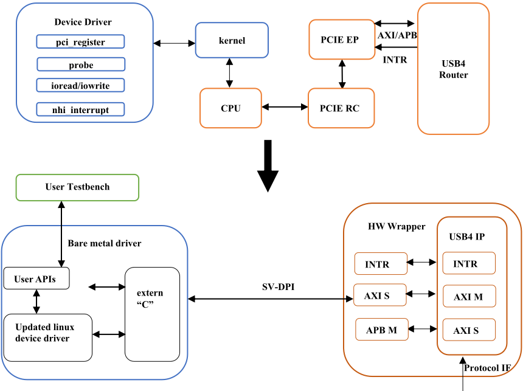

利用 Linux 驱动与 SystemVerilog DPI-C 加速裸机（Bare Metal）驱动开发
论文针对 IP 验证、系统级验证与嵌入式开发中裸机驱动开发周期长、代码复用差的问题，提出一套基于 SystemVerilog DPI-C 的系统性框架，将成熟的 Linux 内核驱动转换为功能等效的裸机驱动。方法上以 C++ kernel proxy 替代缺失的内核服务（iowrite/ioread、中断、内存分配等约 150 个内核 API），通过 SV DPI-C 在 synthesizable SystemVerilog 硬件 wrapper 与 C/C++ 驱动软件之间以完整事务形式传输数据与中断，并对 Linux 驱动做专家引导式裁剪以保留设备核心逻辑。案例将 Linux Thunderbolt 驱动转换为 USB4 connection manager，在 VCS 仿真与 Zebu emulation 中完成 Host/Device router 枚举与 4Gb/s NVM 读写验证，全部功能测试通过且零缺陷。开发时间从传统的 6-8 个月缩短至约 1 个月（降低 83%），复用约 39,000 行已验证 Linux 代码。该框架可推广到 pre-silicon debug、SoC bring-up、virtual prototyping 等场景，对团队构建 IP 验证 transactor 与裸机驱动基础设施有直接借鉴价值。
裸机驱动（无操作系统、直接运行在硬件上的软件）是 IP 验证环境的关键组件，但传统开发周期长达 6-8 个月、复用机会有限且需大量测试以保证 IP 规范合规；而 Linux 生态对几乎所有外设都有成熟且经过充分测试的驱动，却因与内核服务（内存管理、PCIe 子系统、中断处理、同步原语等）紧耦合而无法直接用于仿真、emulation 等裸机验证环境。论文要解决如何系统性复用 Linux 驱动逻辑，快速生成功能等效的裸机驱动。
提出由四个互联组件构成的转换框架：以 C++ kernel proxy 为 Linux 内核服务提供替代定义（如重定义 iowrite32/ioread32、devm_kcalloc、ida_free、cpu_to_be32_array 等，并由 proxy 直接调用驱动的 probe 函数）；在 synthesizable SystemVerilog 硬件 wrapper 中通过 SV DPI-C import/export 与软件侧 extern "C" 函数对接，将内存读写以完整 AXI 事务形式送达 IP，并把 IP 中断经 DPI 回传给驱动的中断处理函数（如 nhi_msi）；对 Linux 驱动源码做依赖分析，注释/替换 PCIe 与内核相关代码，保留设备核心逻辑；最后在 VCS 仿真与 Zebu emulation 环境中做功能等效性验证。案例对象为 Thunderbolt 驱动到 USB4 connection manager（transactor 软件）的转换。
开发时间降低 83%：从传统裸机驱动开发的 6-8 个月缩短至约 1 个月
复用约 39,000 行已验证的 Linux 驱动代码
所有功能测试通过、零缺陷，确认与参考 Linux 驱动实现功能等效
在 VCS 仿真与 Zebu emulation 两个域完成 Host/Device router 枚举及 4Gb/s NVM 读写
识别最小内核 API 集并注释 Linux/PCIe 相关代码约需 2 周，覆盖约 150 个内核函数（内存管理、设备 I/O、中断处理、同步原语）
据作者所述，此前没有工作系统性利用 SV DPI-C 实现 Linux 内核驱动在裸机验证环境中的直接复用；与嵌入式领域面向不同操作系统的硬件抽象层方案不同，该框架无需实现完整 OS；与依赖 UVM/RAL 的寄存器驱动自动生成不同，它面向 UVM 基础设施不可用的 emulation、virtual prototyping 与嵌入式环境，提供不依赖 UVM/RAL 的轻量替代方案。
相关度级别：high
命中能力域：2.4 设计验证方法学 | 2.6 仿真性能与加速器 | 2.7 EDA/验证自动化与 AI 辅助
理由：论文核心是面向 IP 验证环境的裸机驱动与 transactor 基础设施：用 SV DPI-C 桥接 C/C++ 驱动软件与 synthesizable SV 硬件 wrapper，在 VCS 仿真与 Zebu emulation 中配置和激励 USB4 IP，直接命中 2.4 验证方法学（验证环境组件/驱动开发、仿真与 emulation 验证）与 2.6（Zebu 硬件加速器、DPI 事务级传输的仿真性能考量）；其可复用的驱动转换框架、DPI-C 编码规范（参数校验、超时机制、原子寄存器访问、禁止跨边界全局变量）属于 2.7 验证自动化与可复用验证 IP。团队交付 LPDDR/HBM4/UCIe 等高速 IP 的验证与 emulation，同样需要裸机驱动/事务器来配置、激励和响应 IP，该方法可直接迁移。
建议动作：深入精读并做内部分享
| 0 | 1 | 2 | 3 |
|---|---|---|---|
| Suchir Gupta | Amit Sharma | Suneetha Suryadevara | Vishnuvardhan Reddy |
| Synopsys Inc | Synopsys Inc | Synopsys Inc | Synopsys Inc |
| suchiir@synopsys.com | amits@synopsys.com | suryas@synopsys.com | vishnuvr@synopsys.com |
| Sunnyvale, CA, USA | Sunnyvale, CA, USA | Sunnyvale, CA, USA | Sunnyvale, CA, USA |
| 0 | 1 | 2 | 3 |
摘要——开发裸机（bare metal）设备驱动程序（即在没有操作系统的情况下直接运行于硬件之上的软件）对于 IP 验证、系统级验证和嵌入式开发而言至关重要，却又十分耗时。尽管几乎所有外围硬件都已有成熟的 Linux 驱动程序，但它们与操作系统紧密集成，因而无法直接用于裸机环境。本文提出一个系统性框架，利用 System Verilog DPI-C 将 Linux 驱动程序转换为功能等效的裸机驱动程序。我们的方法引入了三项关键创新：（1）采用 SV DPI-C 接口的硬件抽象封装层（wrapper），用以替代内核服务；（2）在专家指导下进行驱动程序转换，同时保留核心设备逻辑；（3）在仿真（simulation）与硬件仿真（emulation）环境中进行全面验证，确保零功能回归。我们通过实现一个 USB4 裸机驱动程序（连接管理器，connection manager）对该框架进行了验证，在 VCS 仿真和 Zebu 硬件仿真两种环境中，通过主机（Host）与设备（Device）路由器枚举以及非易失性存储器（NVM）操作进行了测试，结果表明开发时间缩短了 83%（从 6-8 个月缩短至 1 个月），同时复用了 39,000 行经过验证的 Linux 代码。尽管该方法简化了驱动程序转换流程，但对于存在复杂内核依赖或实时性约束的驱动程序，可能仍需进行适配。该方法可用于将任何 Linux 设备驱动程序转换为裸机驱动程序，从而显著加速各类硬件平台上的开发，包括软硬件协同验证（hardware/software coverification）、流片前调试（pre-silicon debug）、SoC 启动（bring-up）、硬件仿真以及虚拟原型（virtual prototyping）环境。
裸机驱动程序是必不可少的软件组件，用于在无操作系统（OS）支持的情况下对硬件 IP 进行配置、控制、生成激励并响应其请求。这些驱动程序在 IP 验证环境中发挥着至关重要的作用，但其开发周期往往较长，代码复用的机会有限，且需要进行大量测试以确保符合 IP 规范。
相比之下，Linux 内核为几乎所有的硬件外设都提供了成熟且经过充分测试的驱动程序——这凝聚了多年的开发、优化和缺陷修复成果。然而，这些驱动程序与 Linux 基础设施紧密集成，由于依赖内核服务，无法直接在裸机环境中使用。
在裸机 IP 验证环境中，直接硬件控制至关重要，因为 Linux 内核的开销令人难以承受。我们的创新框架系统地将设备特定逻辑与 OS 依赖分离开来，使得经过验证的 Linux 驱动程序逻辑能够在裸机环境中得到复用。通过借助 Linux 驱动程序生态系统的健壮性，我们的框架确保了功能等效性，并保持了验证环境所需的性能特性。
利用该框架，我们为 USB4 transactor 软件开发了一个裸机驱动程序（连接管理器，connection manager），实现了对 USB4 transactor 硬件的配置与控制。USB4 transactor 在仿真（simulation）和硬件仿真（emulation）两个域中均成功运行。该方法可用于将任何基于 Linux 的 IP 驱动程序转换为基于裸机的 IP 驱动程序。
理解 Linux 驱动程序与外围硬件的交互方式，对于体会将这些驱动程序转换为裸机环境的复杂性至关重要 [2]。在 Linux 生态系统中，驱动程序与设备之间的交互涉及多个系统组件：
图 1 展示了 Linux 框架如何将设备驱动程序与设备连接起来。对于任何存储器写或读操作，设备驱动程序会调用 iowrite()/ioread()，通过 CPU、PCIE 根复合体（Root Complex, RC）和 PCIE 端点（Endpoint, EP）组件将数据从内核传输到设备。在中断处理方面，设备驱动程序通过相反的路径从设备接收中断：PCIe EP、PCIE RC、CPU，最终到达内核框架。橙色框中的组件位于硬件仿真器（emulator）上，而蓝色框中的组件位于主 PC（Host PC）上。

pt
Linux 驱动程序与内核基础设施之间的紧密耦合，使得直接在裸机（bare metal）环境中复用变得颇具挑战性。以下关键组件在裸机环境（仿真、硬件仿真、嵌入式系统）中是缺失的：
这一基础设施差距解释了为什么 Linux 内核框架无法直接用于裸机验证环境，也凸显了我们 SV DPI-C 桥接方法的重要意义。
SV DPI-C 已在各种验证场景中被用于连接硬件与软件领域。已有研究证明了其在测试平台（testbench）自动化和验证组件开发方面的有效性。然而，据我们所知，尚无先前工作系统地利用 SV DPI-C 来实现 Linux 内核驱动程序在裸机验证环境中的直接复用。
驱动程序的可移植性问题已通过嵌入式系统中的硬件抽象层（hardware abstraction layer）得到解决，但这些解决方案通常面向的是不同的操作系统，而非裸机环境。我们工作的独特之处在于，无需完整的操作系统实现即可实现 Linux 驱动程序的直接复用。
虽然基于通用验证方法学（Universal Verification Methodology, UVM）的验证环境通常采用寄存器抽象层（Register Abstraction Layer, RAL）模型来实现驱动程序的自动化开发，但我们的框架面向的是 UVM 基础设施不可用的裸机环境——包括硬件仿真平台、虚拟原型和嵌入式系统。我们的 SV DPI-C 方法提供了一种不依赖 UVM 或 RAL 的轻量级替代方案，因而能够广泛适用于各类验证场景。
所开发的裸机驱动程序是 USB4 事务器（transactor）解决方案不可或缺的组成部分。本节概述了典型事务器的体系结构，这对于理解裸机驱动程序开发背后的方法论至关重要。
事务器由两个主要部分组成：硬件和软件。硬件部分采用可综合的 System Verilog（SV）实现，而软件则用 C/C++ 编写。在硬件封装（hardware wrapper）内部，包含 IP、与 IP 交互所需的逻辑，以及用于与相应软件进行通信的 SV DPI-C [1]。软件侧包括遵循软件 IP 规范来控制 IP 的设备驱动程序、用于管理事务器的用户 API，以及用于与硬件封装交互的 extern "C" 函数。利用 SV DPI-C 可以实现软件与硬件之间的有效通信，确保事务器在仿真（simulation）和硬件仿真（emulation）环境中都能平稳运行。
图 2 展示了事务器的拓扑结构。橙色框中的组件位于硬件仿真器（emulator）上，而蓝色和绿色框中的组件则位于主机 PC 上。测试平台（testbench）调用用户级 API 来配置事务器并注册用户级 C 回调函数。这些用户 API 与 IP 驱动程序相连，以管理和配置 IP。当 IP 驱动程序处理内存事务时，它会使用 extern "C" 函数通过 SV-DPI-C 接口与 IP 进行通信。如果 IP 产生事件，则会触发一个中断，该中断通过 SV-DPI-C 接口到达 IP 驱动程序。IP 驱动程序接收到中断后，要么自行处理该中断，要么调用用户回调函数以从测试平台收集响应。

本节阐述将 Linux 设备驱动程序转换为裸机驱动程序的系统化流程。该框架由四个相互关联的组件和一个结构化的转换方法组成。
我们的框架用四个相互关联的组件替代了缺失的 Linux 基础设施，这些组件在裸机环境中重建了 Linux 驱动程序环境：
内核代理（kernel proxy）是一个 C++ 类，它为 Linux 内核服务提供替代定义，从而在无操作系统（OS）支持的情况下实现等效功能：
驱动程序运行所需的数据结构。要定位 probe 函数，可查看驱动程序源代码中的 pci_driver 结构体定义。
这种系统化的方法可确保驱动程序高效地适配裸机运行，消除对 Linux 内核和 PCIe 基础设施的依赖，同时提供直接、高效的硬件资源访问。
本节说明我们如何运用该转换方法，为 transactor 方案中的 USB4 路由器创建 USB4 裸机设备驱动程序，并概述从 Thunderbolt Linux 驱动程序到 USB4 裸机版本的改动 [4]。
我们从 www.kernel.org 下载了 Linux 内核源代码，并创建了一个专用工作区。我们将 Thunderbolt 驱动程序从 <linux_source_directory>/drivers/thunderbolt 复制到该工作区。在研究驱动程序结构之后，我们识别出所有内存管理、PCI 子系统、中断处理、设备管理和同步调用。由于裸机环境不需要 PCIe 基础设施和 Linux 内核服务，我们系统地将工作区中的这些调用注释掉。我们在整个驱动程序中添加了调试消息，以便于调试和验证。
图 3 展示了为创建更新后的 USB4 设备驱动程序而对 nhi.c 文件所做的修改。关键改动包括移除 PCI 初始化代码、用裸机等效实现替换内核内存分配，以及修改中断注册逻辑。
#ifdef INCLUDE_PCIE_COMMENTED_CODE #include <linux/slab.h> #include <linux/errno.h> #endif int nhi_init(void) { ... dev_dbg(2, "Entered ... "); #ifdef INCLUDE_PCIE_COMMENTED_CODE ret = pci_register_driver(&nhi_driver); #endif ... }
//用户测试平台调用 init()
nhi_initialize((void*)this);
//struct pci_driver 结构体说明了当 Linux 内核调用 probe 函数时，设备驱动中的哪些函数会被调用。 static struct pci_driver nhi_driver = { .name = "thunderbolt", .id_table = nhi_ids, .probe = nhi_probe, .remove = nhi_remove, .shutdown = nhi_remove, .driver.pm = &nhi_pm_ops, }; //代理内核调用设备驱动的 probe 函数。 void proxy_kernel::init( void *params ) { ... nhi_probe(x, dev,1); //调用设备驱动的 probe 函数。 ... }
对于 USB4，我们在内核代理中为 iowrite()/ioread() 创建了替代定义。代理内核调用 extern "C" 函数，通过 SV DPI-C 将数据传输到 USB4 IP。图 5 展示了 USB4 Thunderbolt 设备驱动通过 iowrite32() 进行的存储器写入如何经由 SV DPI-C 到达 IP，从而完全绕过 Linux 框架。对于 ioread32() 调用也存在类似的流程。
static void nhi_mask_interrupt(struct tb_nhi *nhi, int mask, int ring) { if (nhi->quirks & QUIRK_AUTO_CLEAR_INT) iowrite32(nhi,val & ~mask, nhi->iobase + REG_RING_INTERRUPT_BASE + ring); else iowrite32(nhi,mask, nhi->iobase + REG_RING_INTERRUPT_MASK_BASE + ring); } //DPI-C 将信息进一步传递到 IP。 extern "C" void mstr_w_data(int w , svBitVecVal * addr); //代理内核进行重定义，并将信息传递给 DPI-C void iowrite32(void * lx, uint32_t value, uint32_t addr) { mstr_w_data(value, addr); }
在研究 Thunderbolt 设备驱动后，我们确定 nhi_msi() 为中断处理函数。图 6 展示了裸机验证环境中中断处理的整体流程。USB4 IP 产生一个中断，该中断通过 SV DPI-C 到达内核代理。代理内核的中断函数调用 nhi_msi()，进而触发 Thunderbolt 驱动中的中断处理逻辑。
//extern C 函数，接收来自 IP 的中断通知，并传递给 proxy_kernel。
extern "C" void interrupt() proxy_kernel->interrupt(); //代理内核调用 Linux 设备驱动中的中断函数。void proxy_kernel::interrupt() nhi_msi(1, );
图 6. IP 将中断信息传递给代理内核，由代理内核调用 Linux 设备驱动中的中断函数。
//内核宏重定义 -- devm_kcalloc #define devm_kcalloc(x,n, size, type) calloc(n,size) //Linux 内核函数 cpu_to_be32_array 被重定义。void cpu_to_be32_array(uint32_t *dst, uint32_t * src, size_t size) { for (size_t i = 0; i < size; ++i) dst[i] = htobe32(src[i]); } //Linux 内核函数 ida_free 被重定义。void ida_free(struct ida * ida, unsigned int id) { free(ida); }
图 7. 对设备驱动中使用、但其定义位于 Linux 库中的函数和宏给出的替代定义。
对于 USB4 路由器，我们在硬件封装中实现了以下组件：
module hw_wrapper ( ); // 由依赖性分析确定的 DPI-C 函数 import "DPI-C" task interrupt; export "DPI-C" task mstr_w_data(addr, value); //DPI 函数将由硬件（H/W）调用。该函数会将数据 //转换为 AXI 事务，并呈现给 IP。 function void mstr_w_data(reg[31:0] addr, reg [1:0]data); … endfunction //该逻辑将对中断进行解析，然后通过 SV-DPI import 调用通知软件（S/W）。 always @(posedge clk) begin if (|intr) __interrupt(); end xtor_usb4_svs usb ( .intr (intr) .axi* (axi*) .usb4* (usb*) ); endmodule
驱动转换过程揭示了若干实践经验。识别最小内核 API 集合并注释掉 Linux 与 PCIe 相关代码大约需要 2 周的分析工作，涉及约 150 个内核函数，涵盖内存管理、设备 I/O、中断处理和同步原语。
在仿真性能方面，我们缺乏直接的对比基准，但我们观察到，完全基于通用验证方法学（UVM）的搭建方式由于 System Verilog 和 UVM 框架的开销而速度较慢。在此场景下，我们的直接编程接口（DPI-C）方法提供了更好的性能。在正常运行期间，通过 DPI 调用进行的内存事务十分频繁，这是最主要的性能考量因素。不过，由于数据是以完整事务而非单个信号的形式传输的，我们在跨 DPI 边界的 4 态值处理方面没有遇到问题。
我们制定了编码规范，其中包括：在所有 DPI-C 函数中进行显式的参数校验与错误处理、设置超时机制以防止仿真挂起、采用原子寄存器访问以避免竞态条件，以及禁止跨 DPI 边界使用全局变量以确保可重入性。我们基于包装器（wrapper）的 DPI 方法提供了足够的抽象能力和调试能力，而无需使用纯 DPI 调用。
图 9 展示了借助 System Verilog DPI-C 接口将 Linux 驱动转换为裸机驱动的整体拓扑结构。橙色框中的组件位于仿真器（emulator）上，而蓝色框中的组件位于主机 PC（Host PC）上。

.
为确保 Linux 驱动与转换后的裸机驱动之间的功能等效性，我们实现了一套全面的验证方法学。我们开发了覆盖初始化、数据传输、错误处理和电源管理的测试用例。具体的验证场景包括通过连接管理器（connection manager）枚举主机（Host）路由器和设备（Device）路由器，以及在仿真（simulation）和硬件仿真（emulation）两个域中以 4Gb/s 的速率执行非易失性存储器（NVM）写入和读取。所有功能测试均成功通过，未检测到任何缺陷，确认了与参考 Linux 驱动实现的功能等效性。
集成测试：我们验证了端到端数据通路，包括初始化序列、数据传输操作和错误处理场景。
我们的框架在 USB4 驱动转换案例研究中取得了可衡量的收益。表 1 总结了定量结果。
| Metric | Traditional Approach | Our Framework |
|---|---|---|
| Development Time | 6-8 months | 1 month |
| Time Reduction | Baseline | 83% |
| Code Reused | 0 lines | ~39,000 lines |
| Defects Found | N/A | 0 |
| Metric | Traditional Approach | Our Framework |
结果表明，开发时间缩短了 83%，从传统裸机驱动开发通常所需的 6-8 个月缩短至使用我们框架的大约 1 个月。这一显著改进源于复用了约 39,000 行经过验证的 Linux 驱动代码。所有功能测试均成功通过，未检测到任何缺陷，确认了 Linux 驱动与转换后的裸机驱动之间的功能等效性。
本文提出了一种实用框架，通过系统性地使用 System Verilog DPI-C 接口，弥合了 Linux 驱动基础设施与裸机验证环境之间的差距。USB4 案例研究验证了我们的方法，展示了一个具有大量内核依赖的复杂设备驱动的成功转换。该框架使开发时间缩短了 83%，同时保持了原始 Linux 驱动与裸机版本之间的完全功能等效性，证实了转换过程的稳健性。
该框架的高效性源于复用了约 39,000 行经过验证的 Linux 驱动代码。在验证过程中，所有功能测试均成功通过，未发现任何缺陷，确保转换后的裸机驱动同时保持了高效性与可靠性。这一系统化方法具有高度通用性，可适应各种硬件平台，因而能够应用于在不同开发环境中将任何 Linux 设备驱动转换为裸机驱动。
使用该框架生成的裸机驱动支持多个关键用例。它们可用于在仿真（simulation）和硬件仿真（emulation）环境中配置和管理 IP，为流片前验证和系统级验证提供有力支持，从而在硬件设计进入量产之前提升其可靠性。该框架还可扩展至虚拟原型环境，支持早期软件开发与测试，使团队能够在硬件可用之前解决潜在问题并优化性能。这一能力通过弥合成熟的 Linux 驱动与裸机验证需求之间的差距，加速了硬件验证流程，并通过有效的代码复用确保功能正确性。
该框架的广泛适用性凸显了其在加速各种平台和用例下裸机驱动开发方面的重大影响。它为硬件验证和早期软件开发提供了战略优势，使其成为现代硬件设计周期中的关键推动因素。